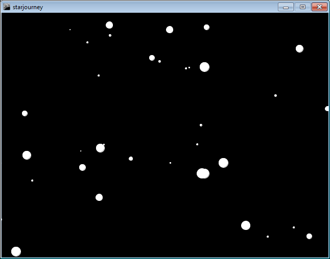

Ad astra, or, one of those old dreams
(Originally published in my blog in January 22, 2013)
This is one of those odd projects of mine that sort of happened. And I really need to muse a bit more about it because I think this sort of stuff might be in danger of not happening too often.

What you’re seeing here is a little bit of a dream come true.
Back in the Commodore 64 days, I saw a program that basically did this. Stars moving across the screen.
Here’s the thing: I really wanted to make a program like that. I never actually wrote that program.
Why? If you wanted to program anything neat like this on Commodore 64, you had to write it in assembly. Back in Commodore 64’s heyday, I really never had the means to write assembly, nor the proper tools to do so. I had a book on 6502 assembly, but I never quite wrapped my head around this stuff.
In short, Commodore 64 had sort of a platform inertia. People had all sorts of cool ideas on what to do, but the platform never really made it too easy.
But I had the idea. I wanted to write one of these programs.
And now I can, because there’s a platform that lets me use all sorts of modern conveniences. Processing, to be specific. It’s quite amazing to see such a nice little programming language that really caters to my niche of audiovisual stuff, and lets you use all sorts of modern paradigms and not limit yourself too much. If you want to write programs that deal with graphics, video and audio, Processing is one of the most awesome tools ever.
I just basically sat down and thought of the concepts a little bit. Okay, so we need a bunch of stars. Stars are objects that have locations. And velocities and sizes. Sizes and velocities are related. Stars appear on the random place in one edge of the screen, and vanish on the other edge of the screen and get replaced by other stars. And if you want to draw a star, you just need to draw an ellipse. And for each frame of the animation, you need to blank the screen, draw the stars, and then recalculate the positions of each star - and if it’s off the screen, you need to replace it with a new star.
Hungh. That was easy.
And that seems to be simple enough to do on Commodore 64, too. You just need to keep track of a basically static array of data. None of the modern memory management headaches, really.
See? I can program cool stuff just fine. I’m quite capable of writing the code for this sort of things, thank you very much. I just don’t want the frigging platform to stand on my way.
Processing is a wonderful piece of engineering because it can target a lot of platforms. The star animation you’re seeing when you go to OpenProcessing site above is unmodified code running on Processing.js, which is basically the JavaScript version of Processing. I developed the program in Java mode. When I wanted to upload it to OpenProcessing, I just told Processing to deploy the thing as a JavaScript program instead - no need to modify the code. Of course, if you want to use some of the more advanced features of Processing like video files/cameras or audio stuff, plain old Java is the only way to go. But for simple graphics hacks like this, OpenProcessing is just fine.
The only problem is that JavaScript version of Processing is a little bit slower and more processor-hungry, even with reasonably modern browsers with excellent JavaScript engines. I’d much rather deploy the Processing sketches as Java applets.
Of course, this is where the dark clouds come in.
I’m a little bit disappointed that Java is now developed by Oracle, who don’t really have security in mind. A huge company with glacially-paced development processes and a lot of inertia is not fit to develop some pieces of code that absolutely should be maintained and fixed with quick pace. There’s been a lot of new Java security exploits lately, and Oracle is really slow at fixing them. This has led to the conclusion that security-minded people will just disable Java applets entirely.
(And, of course, Java is a fucking mess in Windows. No, I don’t want the Ask.com toolbar. Yes, I’d prefer to have an actual updater instead of a weird background process that hogs memory and still only does stuff weekly. What the hell.)
Which is shame, because the Java platform itself is awesome. It’s surprisingly capable and surprisingly simple to write programs for. The development tools like NetBeans are top notch, and we have tons of specific-purpose tools like Processing that target Java platform. As a result, Java is probably and highly arguable the greatest software platform ever devised - or at least something that has great potential to be value for everyone. Java is an absolute heaven compared to similar proprietary mess with awfully slow and finicky developers behind it - Adobe Flash.
So I really hope that Java platform will actually get a sane update policy. With OpenJDK out, Java is arguably in the hands of open source developers, so I really hope that someone will start handling Java vulnerabilities absolutely seriously and make sure there’s less and less chances of shit like this ruining our days.
In summary: It’s great that we can target JavaScript nowadays, but what I really wish is that Java would stop sucking as a browser platform, because it’s actually becoming a great platform nowadays. And Oracle is killing it. Stop it.